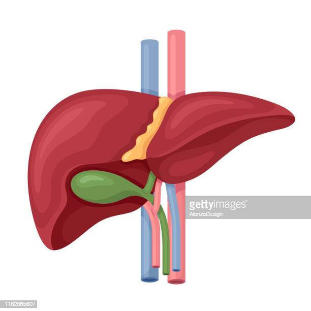

| Características del órgano | |
Durante un trasplante de hígado, el cirujano extrae el hígado enfermo y lo reemplaza con uno sano. La mayoría de los hígados provienen de un donante fallecido. A veces hay un donante vivo, que es cuando una persona dona parte de su hígado a un paciente en particular. |
 |